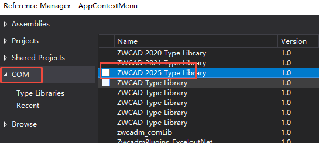
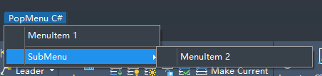
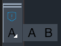

.NET can create custom menus and toolbars by calling COM interfaces.
Menus created this way are temporary and only valid within the current ZWCAD process. They need to be recreated the next time ZWCAD is opened. To create a permanently saved custom menu interface, consider using CUIX menu files. This method requires loading the CUIX file only once for the menu interface to persist.
For code examples on creating CUIX files, refer to CUIX Interface.
Add References
Add ZWCAD 2025 Type Library to the project references.

Add the following before the project code:
using ZWCAD;
Obtain Custom Menu Files
Custom menu files store customized interface elements such as menus, toolbars, and Ribbon bars. Use the CUI command in ZWCAD to view loaded menu file contents.
When modifying menu files via COM interfaces, first obtain a menu group object, then add or modify menus and toolbars. Changes made via COM interfaces are not saved to CUI files, so directly modify the "ZWCAD" main menu.
// Get ZWCAD menu groups
ZcadMenuGroups menuGroups = (ZcadMenuGroups)Application.MenuGroups;
ZcadMenuGroup menuGroup = menuGroups.Item("ZWCAD");
Customize Menu Bar

Create Drop-Down Menu
To create a custom drop-down menu, add a new menu item to the Menus collection of the current MenuGroup, then add buttons or separators.
// Create drop-down menu
ZcadPopupMenu popupMenu = menuGroup.Menus.Add("PopMenu C#");
popupMenu.AddMenuItem(popupMenu.Count, "MenuItem 1", "_about\n");
popupMenu.AddSeparator(popupMenu.Count);
Create Submenu
Submenus group related buttons for easier access.
// Add submenu
ZcadPopupMenu subMenu = popupMenu.AddSubMenu(popupMenu.Count, "SubMenu");
subMenu.AddMenuItem(subMenu.Count, "MenuItem 2", "vernum\n");
ZcadMenuBar menuBar = (ZcadMenuBar)Application.MenuBar;
popupMenu.InsertInMenuBar(menuBar.Count);
Customize Toolbar

Create Toolbar
Add a new Toolbar object to the current menu group, then add buttons to it.
// Create toolbar
ZcadToolbar toolBar = menuGroup.Toolbars.Add("ToolBar C#");
// Add standard button
ZcadToolbarItem toolBarItem = toolBar.AddToolbarButton(toolBar.Count, "About", "Software informations.", "_about\n");
// Set button icons
string dllPath = System.IO.Path.GetDirectoryName(Assembly.GetExecutingAssembly().Location);
toolBarItem.SetBitmaps(dllPath + "\\..\\..\\images\\16x16.bmp", dllPath + "\\..\\..\\images\\32x32.bmp");
Add Flyout Toolbar Button
A flyout toolbar links another toolbar. Create a new toolbar and attach it to the current toolbar using AttachToolbarToFlyout.
// Add flyout button
ZcadToolbarItem flyoutButton = toolBar.AddToolbarButton(toolBar.Count, "Flyout Button", null, null, true);
// Create new toolbar
ZcadToolbar flyout = menuGroup.Toolbars.Add("Flyout Toolbar");
flyout.Visible = false; // Hide the new toolbar
ZcadToolbarItem item1 = flyout.AddToolbarButton(flyout.Count, "Version", "Version Number", "vernum\n");
item1.SetBitmaps(dllPath + "\\..\\..\\images\\a_16x16.bmp", dllPath + "\\..\\..\\images\\a_32x32.bmp");
ZcadToolbarItem item2 = flyout.AddToolbarButton(flyout.Count, "Line", "Draw a line", "_line\n");
item2.SetBitmaps(dllPath + "\\..\\..\\images\\b_16x16.bmp", dllPath + "\\..\\..\\images\\b_32x32.bmp");
// Attach the toolbar as a flyout
flyoutButton.AttachToolbarToFlyout(menuGroup.Name, "Flyout Toolbar");
Toolbar Default Position
Use Dock to anchor toolbars or Float to set floating positions.
// Set default dock position
toolBar.Dock(ZcToolbarDockStatus.zcToolbarDockLeft);
// Set floating position
// top: pixels from top, left: pixels from left, numberFloatFows: rows when horizontal
toolBar.Float(200, 200, 1);
Sample Code
Refer to .NET sample project: ZwDotNetGuide/CustomMenu